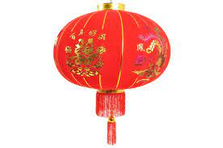
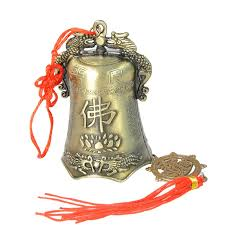
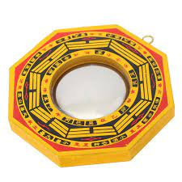
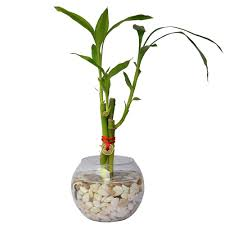

Lingote o Yuan Bao

Este tipo de lingote se utiliza comúnmente en Feng Shui para atraer la suerte a la casa, según el principio de que el oro, incluso simbólico, atrae la suerte en los ámbitos de la riqueza y la prosperidad.
Farol o Linterna roja

El rojo representa la felicidad, la buena suerte, la abundancia y la prosperidad. En feng shui, el rojo se asocia con las relaciones, en especial el matrimonio. ... Encender o apagar los faroles rojos en una casa al mismo tiempo fortalece la unidad y el placer de la pareja.
Monedas China

Un amuleto sencillo y poderoso para atraer la fortuna. Las monedas chinas son una práctica herramienta utilizada en el Feng Shui. Simbólicamente representan la prosperidad en todos sus aspectos tales como dinero, riqueza, abundancia y poder.
Campanas Chinas

Un objeto muy popular dentro de los amuletos chinos son las campanas, estas suelen colgarse en la entrada principal para atraer la energía positiva, y estimulan la energía en un lugar para hacer que fluyan las vibraciones. También, limpian el espacio y lo devuelven a un estado más energético.
Nudo del Infinito

El nudo infinito tibetano, para los budistas, este nudo sin fin es un recordatorio de que todo el universo está relacionado, y de que muchos hechos futuros tienen sus raíces en el presente. Su diseño representa y simboliza causa y efecto, en otras palabras.
Bagua o Pakua

El Mapa Bagua es una herramienta básica en Feng Shui porque representa el plano energético del hogar. Un plano que está dividido en nueve áreas, y cada una corresponde a un aspecto vital y distinto de nuestra vida: el amor, el trabajo, la riqueza, la prosperidad, la salud.
Lucky Bamboo
